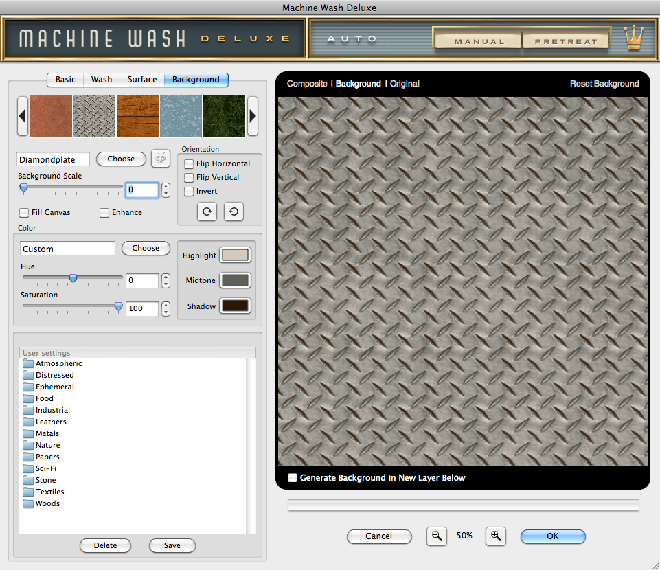
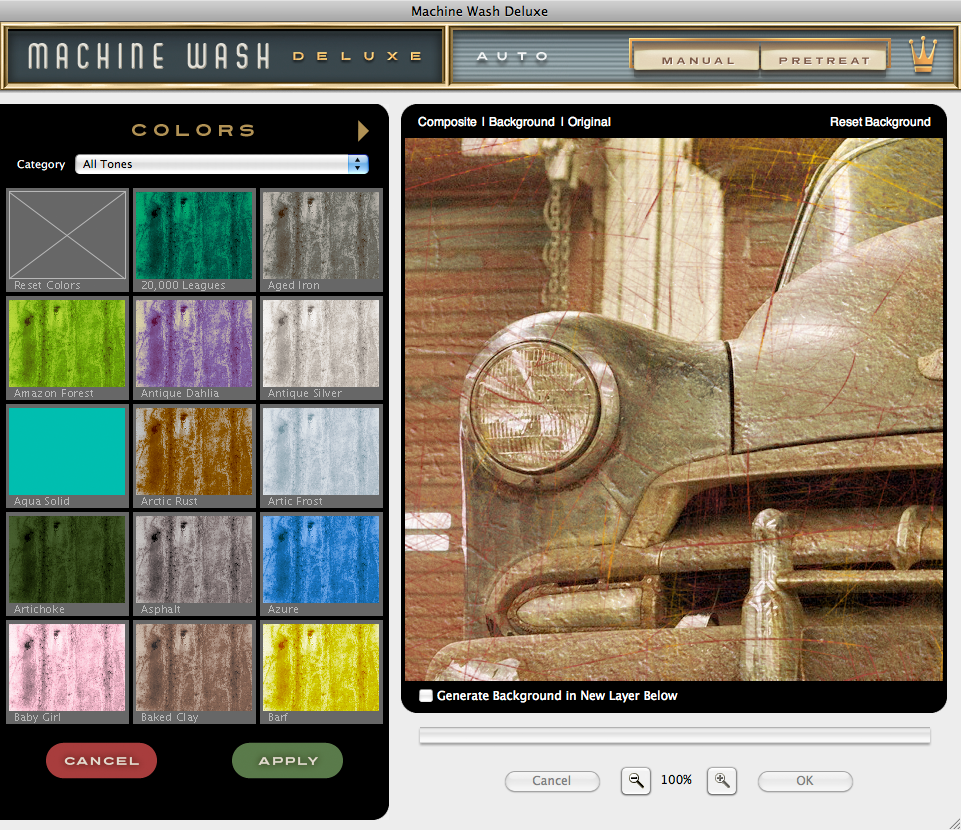

Let's Learn About Machine Wash Deluxe
Background Settings
What started out originally as color tones revealed from a Wash affected image has become a full blown Background surface creator capable of the most realistic fully-editable dimensional Backgrounds you'll find!
|  |
Select a Background
- Background Preset Picker - To get started, choose from our default preset Backgrounds you'd like to start working with. To do so, simply click the desired Background preset you'd like to use from the filmstrip picker by clicking on it. Click the arrows to the left and right of the picker to browse through the Background preset effects or to reset the Background effect, just click the grey box icon in the far left of the picker.
- Choose a Background Texture Effect - If you'd rather create your own Background from scratch, it's easy! Start by choosing the texture you'd like to start working with for your Background. To do so, simply click the Choose button to launch the Texture Picker. Once you've selected the desired texture you'd like to use, you can proceed to fine-tune using the controls defined below. Additionally, you can select a different texture effect at any time and your current settings will be applied to the new texture.
- Link Texture Effect Option - If you happen to choose a texture effect already in use in another tabbed section of the plug-in, you will be asked by the plug-in if you'd like to link these texture settings. If you wish to link the settings, simply choose which tabbed section settings you'd like to inherit and click Yes to link and apply these settings. If you do not wish to link the settings, simply click the No button.
You may unlink and relink any linked or previously linked textures at any time by clicking the link button to the right of the Choose button. Note you cannot link any multiplier texture effects in the plug-in.
* NOTE - All Background controls remain disabled until a texture is chosen from the Texture Picker or a Background preset is chosen.
Adjust the Background Properties
- Background Scale - Using the slider control, you may enlarge or reduce the scale of the selected texture effect appropriate to the resolution of the image by moving the slider below or simply enter a number in the text entry field to the right. By default the texture effect is applied at the smallest scale to the image.
- Enhance - Use Enhance to give your Background more realism! When checked, Enhance extends the full range of color levels applied to the Background to reveal the brightest and darkest tones.
- Fill Canvas* - In a layered image, the Background effect sits directly behind the active image area used in the layer. To apply the Background effect to the entire canvas, simply enable this option.
* NOTE - This option is available when you're working with a layered image in Adobe Photoshop or other imaging applications that support layering.
Adjust the Background Orientation
- Flip Horizontal - Click the checkbox to flip the texture effect horizontally.
- Flip Vertical - Click the checkbox to flip the texture effect vertically.
- Invert Background - Click the Invert checkbox to inverse the texture effect.
- Rotate - Click either rotate button to rotate the texture effect in 90 degree increments.
Adjust the Background Colors
- Background Color Picker - In the Color dialog box, click the Choose button to launch the Background Color Picker to select the color tones you'd like to start working with or manually select the Highlight, Midtone and Shadow color tones by clicking the color swatch to the right to launch the application color picker.
|  |
- Choosing Colors - We've created over 1,500 color tone presets for you to pick from, and to make it easier we've categorized them by color, color type and by color reference. By default, all color tones are presented and can be filtered further by clicking the Category drop down menu along the top and selecting your desired color tone category.
To replace the Background color tones using the Background Color Picker, simply click on any thumbnail to quickly update the Background and preview your selection in real-time. Once you're happy with your selection, click the Apply button to apply the selected color tones and close the Background Color Picker. If you don't wish to change the color tones, simply click the Cancel button to return to the Surface tab. - Hue Adjustment - Click and drag the Hue slider control to adjust the overall color hue of the Background.
- Saturation - Click and drag the Saturation slider control to adjust the overall color saturation of the Background.
User Settings - The User Created Settings dialog allows you to save or apply previously saved Background settings to the image you're working with, and we've created over 1,500 great Background presets to get you started. Once you've created a Surface effect setting you like, click the Save button, name the setting and click OK to save this setting. To recall and apply a setting, simply click on the setting name in the dialog box. To delete a setting, simply click its name in the dialog box and click the Delete button.
Working with the Preview Window
- Preview Options - Above the preview window at right, you'll notice some viewing options. By default the Composite option is selected to show you what all combined tabbed section effects look like applied to the image. At any time you can click the Original option to toggle between the unaffected image and a preview of the filtered image with all effects applied.
- Reset Background - Reset Background is located above the preview window on the right. When clicked, it will reset all Background effect controls to their default state.
- Magnifying the Preview - Below the preview window, you'll see the magnification controls. By clicking the appropriate icon (- or +), you can increase or decrease the magnification of the preview window. The current level of magnification is shown between the magnification icons.
- Moving the Preview - When you have increased magnification and wish to view the texture effect on the rest of the image not visible in the preview window, simply move your mouse into the preview window and click and drag your image around to reveal the texture effected image.
- Re-positioning the Texture Effect - To modify the position of the Background effect on your image, hold down the Command (Apple) key (or the Ctrl key on Windows) then click and drag within the preview window to reposition the center of the effect.
- Generate Background in New Layer Below* - Simply enable this option if you want the filter create and apply the Background effect on its own layer below leaving the original image in intact.
* NOTE - This option is only displayed in Adobe Photoshop and other imaging applications that support layering.
Pro Tip - Adobe Photoshop users may use keyboard shortcuts to instantly change the zoom magnification. To fit the full image within the preview window, simply hold down the Command (Apple) key (or the Ctrl key on Windows) then press the number zero (0) on the keyboard. To view the image at 100% size, hold down the Command (Apple) key (or the Ctrl key on Windows) then press the number one (1) on the keyboard.